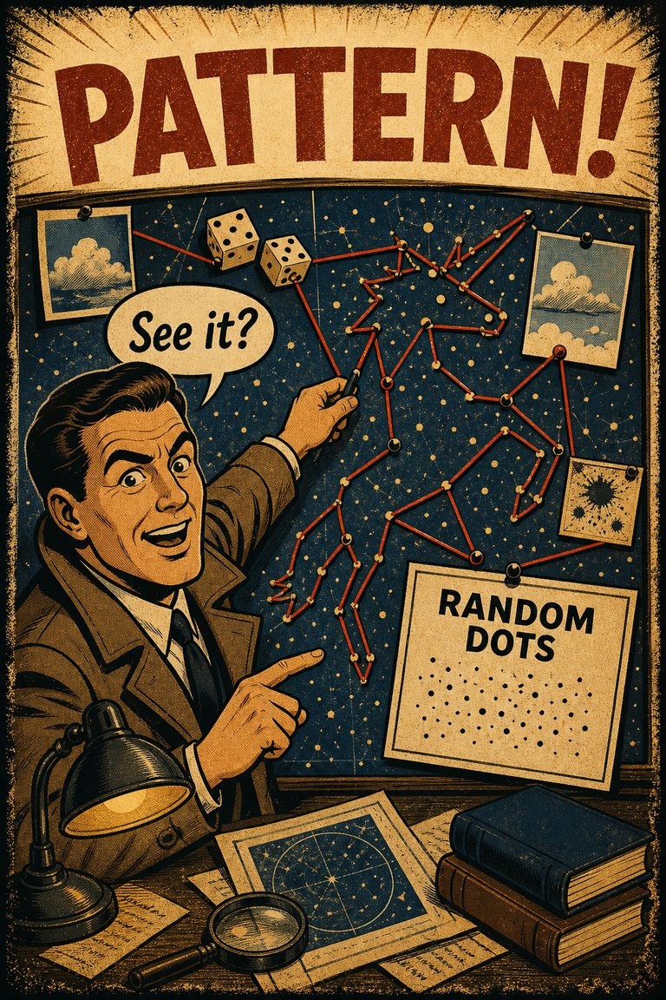
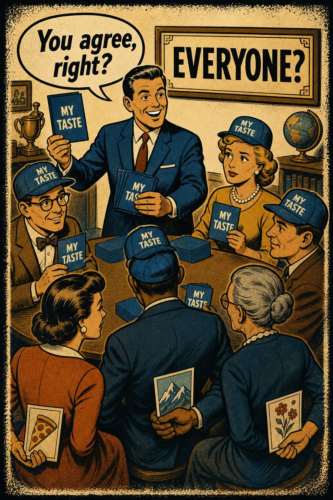
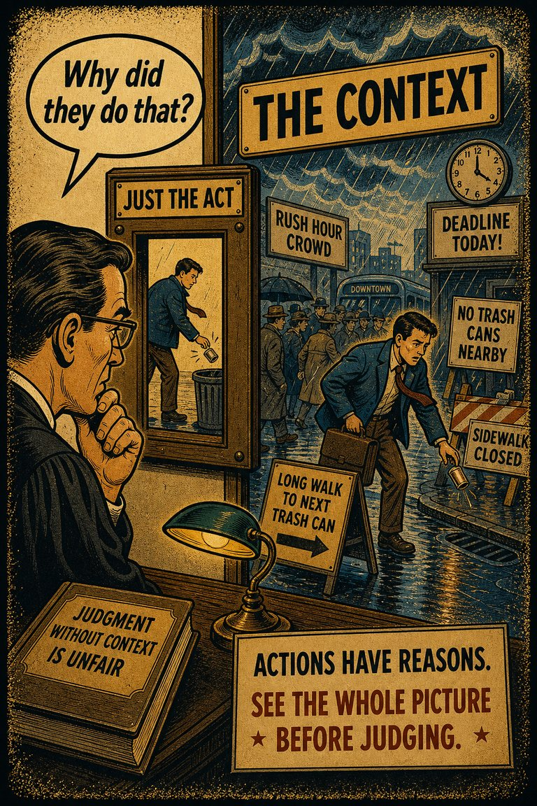
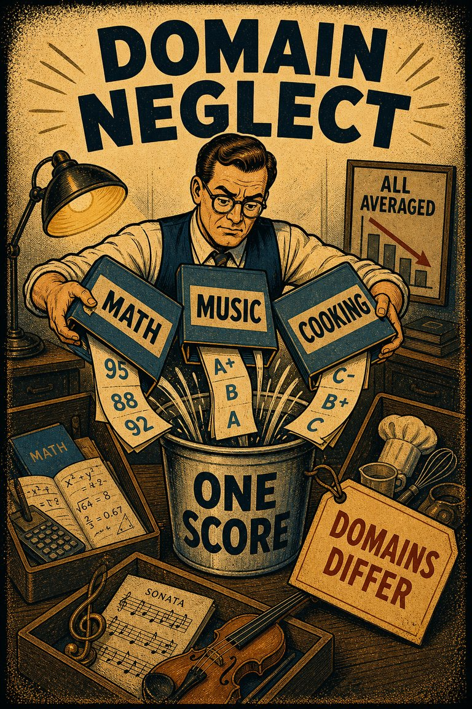
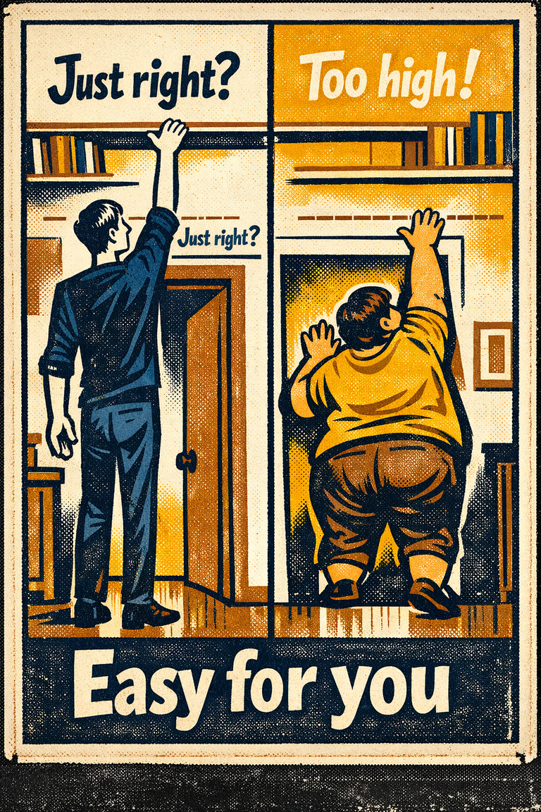
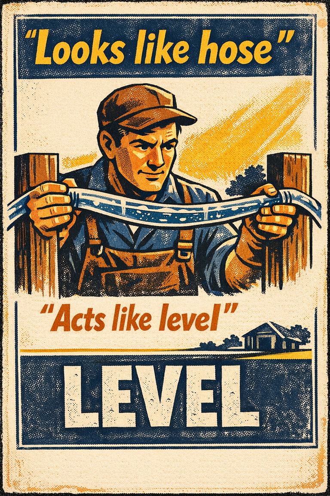

Everyday life
In everyday life, this often looks like people leaning on the easiest first interpretation when situations where causal attribution is already difficult and the outcome cue feels easier to trust than a fuller review..

Cognitive Biases
A practical cognitive-bias site with clear definitions, learning paths, assessments, self-audits, and debiasing tools.
Cognitive Bias
Absence of expectation of sudden trend breaks in continuous developments
What it distorts
Biases that bend explanations about why events happened and who or what caused them.
Typical trigger
Situations where causal attribution is already difficult and the outcome cue feels easier to trust than a fuller review.
First countermove
Start with the causal attribution question instead of the first intuitive answer, then check whether the outcome pattern is doing invisible work.
Best use
Quick reference
What story about cause, blame, or intention feels satisfying here that may be outpacing the evidence?
In causal attribution problems, the result of an event bends how the process, evidence, memory, or explanation is interpreted afterward before a fuller check catches up.
Use the quick check and reflection questions before locking the label. Nearby entries often share the same outer appearance while differing in what actually drives the distortion.
Each example changes the surface context while keeping the same hidden distortion in place.
In everyday life, this often looks like people leaning on the easiest first interpretation when situations where causal attribution is already difficult and the outcome cue feels easier to trust than a fuller review..
At work, this often appears when teams treat the first coherent story as sufficient instead of slowing the process long enough to compare alternatives.
In public discourse, it often surfaces when commentators move too quickly from salience to conclusion while the underlying evidence remains thinner than it sounds.
The distortion usually feels like ordinary good judgment from the inside, which is why procedural repairs matter more than mere recognition.
Teaching note: Start with the causal Attribution problem, then show how the outcome pattern makes the distortion feel natural from the inside.
The strongest debiasing moves change the process, not just the label.
Start with the causal attribution question instead of the first intuitive answer, then check whether the outcome pattern is doing invisible work.
Ask someone else to restate the case from a genuinely different starting point before committing.
Change the workflow so this distortion becomes harder to repeat by default next time.
Practice And Repair
Follow the moment where the bias first becomes attractive, then track how that attraction turns into a distorted judgment before jumping straight to the label.
Situations where causal attribution is already difficult and the outcome cue feels easier to trust than a fuller review.
The first coherent reading starts to feel like ordinary good judgment from the inside.
Biases that bend explanations about why events happened and who or what caused them.
Start with the causal attribution question instead of the first intuitive answer, then check whether the outcome pattern is doing invisible work.
What story about cause, blame, or intention feels satisfying here that may be outpacing the evidence?
Spot It
Slow It
Reframe It
These are nearby labels that can share the same outer appearance while differing in what actually drives the distortion. Use the overlap, the distinction, and the diagnostic question together before settling the call.
Why compare it: A nearby label worth comparing before settling the diagnosis.
Why compare it: A nearby label worth comparing before settling the diagnosis.
Why compare it: A nearby label worth comparing before settling the diagnosis.
These are useful when the label seems roughly right but the process change still feels underspecified.
What story about cause, blame, or intention feels satisfying here that may be outpacing the evidence?
How is the known result warping the way the earlier judgment or evidence now feels?
What evidence or comparison would most seriously change the current call?
These sourced cases come from closely related biases and help show the same kind of pressure while a direct case for this page catches up.
Conspiracy-board style pattern hunting
Apophenia is often illustrated through situations where unrelated signals, names, dates, or events are woven into a hidden-order story that feels too meaningful to dismiss as coincidence.
Why it fits: The persuasive force comes from the pattern-feel itself long before the links have survived independent testing.
Related through: Apophenia
Overview case
Ambiguous peer behavior read as hostile intent
Dodge's work on children's social cognition showed how ambiguous provocations can be interpreted as hostile, especially among aggressive children.
Why it fits: Uncertain behavior gets filled in with threat before the evidence can support that conclusion.
Child Development · 1980
These linked tools turn the page into practice instead of leaving it at the level of definition.
This bias does not yet have a dedicated path, but these nearby paths are usually the clearest place to see the same family of distortion in motion.
Nearby path
Use this path when you suspect that the apparent evidential picture is itself distorted.
Nearby path
Misinformation, Memory, And Crowds
Use this path when a claim is gaining traction partly because it is circulating well rather than because it has been carefully verified.
This bias does not yet have its own dedicated self-check, but these nearby audits usually catch the same kind of drift before it hardens.
Nearby audit
Is this memorable because it is representative, or because it is dramatic and easy to circulate?
These neighbors were selected from shared categories, shared patterns, and explicit editorial links where available.

The tendency to perceive meaningful connections or patterns between unrelated things.

The tendency to assume other people are more similar to oneself than they really are.

The tendency to neglect the human context of technological challenges.

The tendency to ignore relevant domain knowledge when reasoning across unfamiliar fields.

Biases in attribution of meaning and perceived properties to objects or events based on the physical capacities and properties of the body, such as sex and temperament.

In human–robot interaction, the tendency of people to make systematic errors when interacting with a robot.